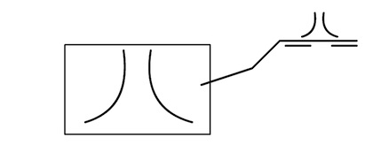
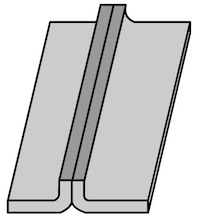
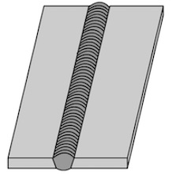
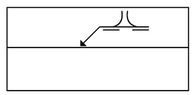
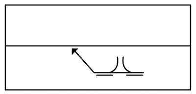

Dubbelflänsad stumfog


Dubbelflänsad stumfog utan svets

Dubbelflänsad stumfog med svets
Beteckningarna visar att plåtarna ska svetsas i dubbelflänsad stumfog.
Svetsningen sker på den sida som är vänd bakåt på ritningen.

Svetsningen sker på den sida som är vänd framåt på ritningen.
